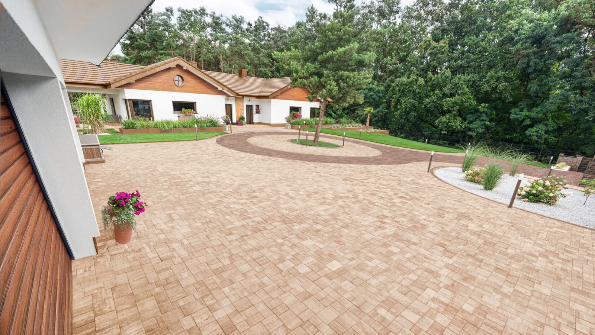

Nowy kolorDrogbruk
Primavera Lumino
Nadaj nawierzchni nowy charakter. Zestaw odcień z elewacją, zielenią i detalami swojego domu.
Poznaj produkt u Drogbruk ↗
Drogbruk / NawierzchnieOd wjazdu na posesję po ostatni detal w ogrodzie. Wybierz rozwiązania, które pasują do Twojego domu i sposobu życia.
 01
01Podjazd z charakterem. Ścieżki, które prowadzą tam, gdzie lubisz.
Drogbruk · Forbet · Libet 02
02Twoje miejsce na dłuższe poranki i spokojne wieczory.
Bozza · Poz-Bruk 03
03Spójna oprawa domu. Zadbaj o harmonijną kompozycję.
Drewbet · SLABB · COM-BET 04
04Stopnie, murki i detale, które porządkują przestrzeń.
SLABB · Libet 05
05Wydobądź to, co najpiękniejsze. Także po zmroku.
LedBruk · Libet 06
06Zieleń w dobrych proporcjach. Detal, który dopełnia całość.
Future DesignNawierzchnie, tarasy i ogrodzenia, które tworzą jedną całość. Odkryj materiały do swojej przestrzeni. Zaplanuj ją z Markin.
Materiały. Doradztwo. Projekt.
Radlin · okolice Kielc
Pomagamy połączyć estetykę z codzienną wygodą. Dobieramy materiały, rozmawiamy o rozwiązaniach i przygotowujemy indywidualną wycenę.
Opowiedz o działce, sposobie jej użytkowania i efekcie, który chcesz uzyskać. Pomocne będą wymiary, zdjęcia oraz inspiracje.
Porównajmy formaty, kolory i zastosowania. Połączymy nawierzchnie, ogrodzenie oraz detale w kierunek odpowiadający Twojej architekturze.
Omówimy projekt i zestawienie materiałów. Dostępność, cenę oraz sposób odbioru lub transportu ustalimy dla konkretnego zamówienia.
Detale z galerii Markin. Znajdź inspirację dla swojej posesji.
Porozmawiajmy o podobnym efekcieNadaj nawierzchni nowy charakter. Zestaw odcień z elewacją, zielenią i detalami swojego domu.
Szczegóły u producenta ↗Zbuduj przestrzeń na długie poranki i spokojne wieczory. Zobacz, jak ten materiał odnajdzie się przy Twoim domu.
Szczegóły u producenta ↗Światło zmienia ogród po zmroku. Podkreśl przebieg ścieżki i nadaj wieczorom własny nastrój.
Szczegóły u producenta ↗Jedna linia światła, zupełnie inny wieczór. Podkreśl geometrię tarasu, ścieżek i wejścia do domu.
Szczegóły u producenta ↗Produkty z sekcji nowości producentów. Zapytaj nas o cenę i dostępność wybranego wariantu.